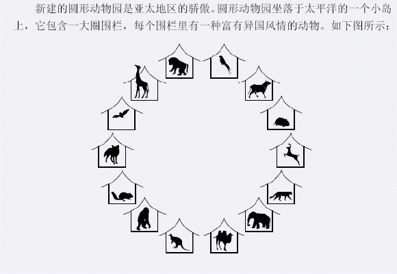
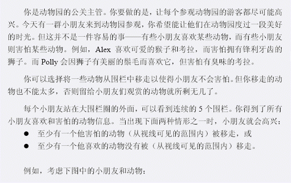
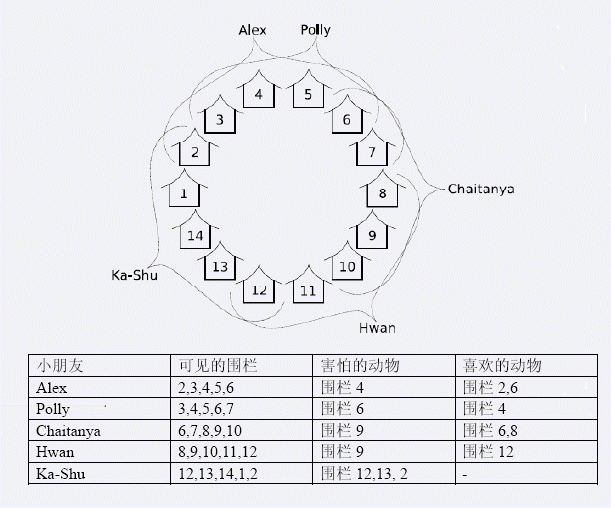
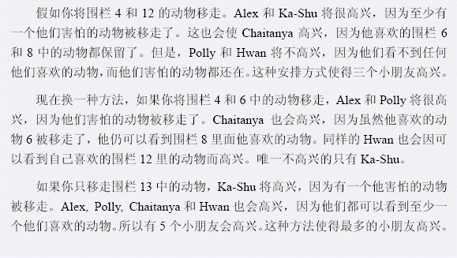

[CTSC2007]动物园zoo
时间限制：10s 空间限制：162MB
题目描述




输入格式
输入的第一行包含两个整数N, C，用空格分隔。N是围栏数(10≤N≤10 000)，C是小朋友的个数(1≤C≤50 000)。围栏按照顺时针的方向编号为1,2,3,…,N。接下来的C行，每行描述一个小朋友的信息，以下面的形式给出： E F L X1 X2 … XF Y1 Y2 … YL 其中： E表示这个小朋友可以看到的第一个围栏的编号(1≤E≤N)，换句话说，该小朋友可以看到的围栏为E, E+1, E+2, E+3, E+4。注意，如果编号超过N将继续从1开始算。如：当N=14, E=13时，这个小朋友可以看到的围栏为13,14,1, 2和3。 F表示该小朋友害怕的动物数。L表示该小朋友喜欢的动物数。围栏X1, X2, …, XF 中包含该小朋友害怕的动物。围栏Y1, Y2, …, YL 中包含该小朋友喜欢的动物。 X1, X2, …, XF, Y1, Y2, …, YL是两两不同的整数，而且所表示的围栏都是该小朋友可以看到的。小朋友已经按照他们可以看到的第一个围栏的编号从小到大的顺序排好了(这样最小的E对应的小朋友排在第一个，最大的E对应的小朋友排在最后一个)。注意可能有多于一个小朋友对应的E是相同的。
输出格式
仅输出一个数，表示最多可以让多少个小朋友高兴
样例输入
样例输入1 14 5 5 2 1 2 4 2 6 3 1 1 6 4 6 1 2 9 6 8 8 1 1 9 12 12 3 0 12 13 2 样例输入2 12 7 6 1 1 1 1 5 5 1 1 5 7 5 0 3 5 7 9 7 1 1 7 9 9 1 1 9 11 9 3 0 9 11 1
样例输出
样例输出1 5 样例输出2 6
提示
没有写明提示
题目来源
没有写明来源